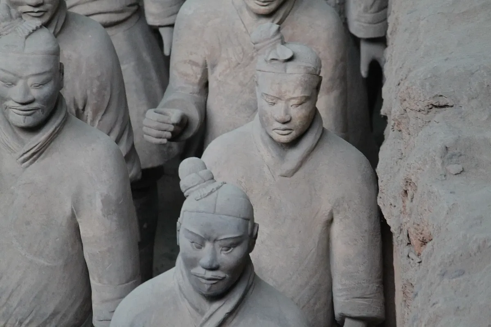

The Terracotta Army: मिट्टी के 8,000 सैनिक
वे सूखे के दौरान कुआँ खोद रहे थे। पानी के बजाय किसानों को एक सैनिक मिला — हज़ारों में पहला।

मार्च 1974 में, Xi’an के बाहर Lintong County में, किसानों के एक समूह — Yang Zhifa, उनके पाँच भाई और उनके पड़ोसी Wang Puzhi — एक महान दफ़न टीले से लगभग डेढ़ किलोमीटर दूर एक कुआँ खोद रहे थे। उनकी फावड़ियाँ पकी हुई मिट्टी से टकराईं: एक आदमकद आकृति के टुकड़े, और कांस्य बाण-फलक। उन्हें अंदाज़ा नहीं था कि उन्होंने बीसवीं शताब्दी की सबसे महान पुरातात्विक खोजों में से एक कर ली थी।
यह क्या है?
Terracotta Army Qin Shi Huang की कब्र के पास गड्ढों में दफ़न आदमकद मिट्टी की आकृतियों का एक विशाल संग्रह है, वह व्यक्ति जिसने China को एकीकृत किया और 221 ईसा पूर्व स्वयं को उसका पहला सम्राट घोषित किया। आकृतियाँ परलोक में उसकी रक्षा और सेवा के लिए बनाई गई थीं।
पुरातत्वविदों का अनुमान है कि तीन मुख्य गड्ढों में 8,000 से अधिक सैनिक हैं, साथ में 130 रथ जिनमें 520 घोड़े और 150 घुड़सवार घोड़े हैं — और उनमें से अधिकांश अभी भी ज़मीन के नीचे हैं। सैनिक युद्ध संरचना में खड़े हैं, और वे एक मॉडल की प्रतियाँ नहीं हैं: उनकी ऊँचाई पद के अनुसार बदलती है, लगभग 184 से 197 सेंटीमीटर तक, generals सबसे ऊँचे, और उनके चेहरे, केश-शैलियाँ और वर्दियाँ अलग-अलग तैयार की गई थीं। वे कभी असली कांस्य हथियार रखते थे, और वे मूल रूप से चमकीले रंगों में रंगे गए थे।
यह कैसे मिला
किसानों ने अपनी अजीब खोज की सूचना दी, और पुरातत्वविदों ने जल्द ही गड्ढों को उजागर करना शुरू कर दिया। जो उभरा वह एक सेना से कहीं बड़ा था। गड्ढे एक विशाल necropolis का केवल एक हिस्सा हैं जो सम्राट की राजधानी के दर्पण की तरह बनाया गया था, उसकी कब्र के टीले के चारों ओर 56 वर्ग किलोमीटर से अधिक क्षेत्र में फैला, संरक्षित क्षेत्र में लगभग 200 साथी गड्ढों और 600 से अधिक स्थलों के साथ।
समाधि पर काम 246 ईसा पूर्व शुरू हुआ था, भविष्य के सम्राट के तेरह वर्ष के लड़के के रूप में Qin के सिंहासन पर आने के तुरंत बाद। इतिहासकार Sima Qian ने, लगभग एक शताब्दी बाद लिखते हुए, एक विशाल भूमिगत महल का वर्णन किया — और दावा किया कि बहते पारे से नदियों के मॉडल बनाए गए थे। उल्लेखनीय रूप से, टीले के आसपास आधुनिक मिट्टी परीक्षणों में पारे का असामान्य रूप से उच्च स्तर मिला है, जो उनके विवरण का समर्थन कर सकता है।
खोज स्थल अब गड्ढों के ऊपर बने संग्रहालय हॉलों द्वारा संरक्षित है, और 1987 में UNESCO ने Mausoleum of the First Qin Emperor को World Heritage List में जोड़ा।
इसे ख़ास क्या बनाता है
पैमाना कहानी का केवल आधा हिस्सा है। योद्धा उन कार्यशालाओं में बनाए गए थे जिन्होंने सामूहिक उत्पादन जैसी किसी चीज़ — मानक हिस्सों से बने शरीर — को व्यक्तिगत हाथ-परिष्करण के साथ जोड़ा, ताकि कोई दो चेहरे ठीक एक जैसे न हों। उनकी वर्दियाँ, कवच और केश-शैलियाँ Qin सेना के संगठन को असाधारण विस्तार से दर्ज करती हैं, घोड़ों की लगाम तक, जैसा कि UNESCO की सूची नोट करती है।
रंग एक दुखद कहानी कहता है। आकृतियाँ कभी जीवंत रंगों में थीं, लेकिन प्राचीन रंग किसी आकृति के खुदाई के बाद हवा के संपर्क में आने के मिनटों के भीतर झड़ने और फीका पड़ने लगता है। यह एक कारण है कि पुरातत्वविद् अब धीरे और सावधानी से खुदाई करते हैं, और सेना का इतना हिस्सा जानबूझकर दफ़न क्यों रहता है।
जो हम अब भी नहीं जानते
सम्राट का अपना कब्र कक्ष, महान टीले के नीचे, कभी खोला नहीं गया। पुरातत्वविदों ने इसे न खोदने का चुनाव किया है, आंशिक रूप से अंदर जो कुछ है उसकी रक्षा के लिए — और पारे की नदियों का Sima Qian का वर्णन, उन मिट्टी मापों द्वारा समर्थित, सावधानी का एक और कारण है। कक्ष में क्या है यह पुरातत्व के महान अनखुले दरवाज़ों में से एक बना हुआ है।
ज़मीन के ऊपर भी खुले सवाल हैं: Qin राजवंश के पतन के बाद की अराजकता में गड्ढे कैसे क्षतिग्रस्त और जलाए गए, अनखुदे क्षेत्रों में कितनी आकृतियाँ हैं, और अभी उजागर होने वाली आकृतियों पर रंग को कैसे संरक्षित किया जाए। दो हज़ार वर्ष पहले दफ़नाए जाने के बाद भी, मिट्टी के सैनिक अभी भी पहरा दे रहे हैं — और अभी भी रहस्य छिपाए हैं।
संक्षिप्त तथ्य
- दफ़नाया गया: लगभग 210–209 ईसा पूर्व, Qin Shi Huang के साथ, China के पहले सम्राट
- अनुमानित आकृतियाँ: 8,000 से अधिक सैनिक, 130 रथ, तीन गड्ढों में 670 घोड़े
- मिला: 29 मार्च 1974 को, Lintong में कुआँ खोदते किसानों द्वारा, Xi’an के पास
- ऊँचाई: लगभग 184–197 cm, पद के अनुसार बदलती
- स्थिति: 1987 से UNESCO World Heritage Site; सम्राट का कब्र कक्ष अनखुला रहता है
छोटा वीडियो देखें
इस कहानी का छोटा वीडियो जल्द ही हमारे Facebook पृष्ठ पर आ रहा है।
स्रोत
- UNESCO World Heritage Centre — Mausoleum of the First Qin Emperor (inscribed 1987)
- Emperor Qinshihuang’s Mausoleum Site Museum — official site (bmy.com.cn)
छवियाँ: असली वस्तुओं की तस्वीरों को उनके लाइसेंस के साथ श्रेय दिया जाता है। किसी भी कल्पित दृश्य पर “AI reconstruction” का लेबल होता है। इस लेख की मुख्य छवि Pit 1 की एक असली तस्वीर है।